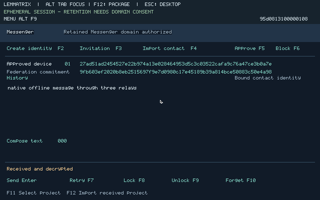
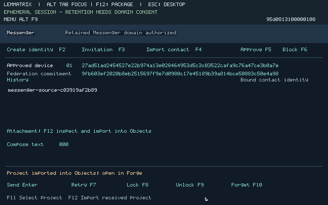
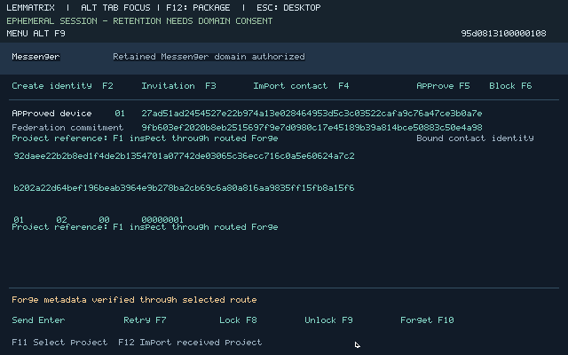
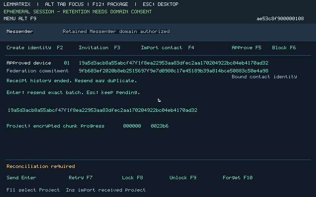
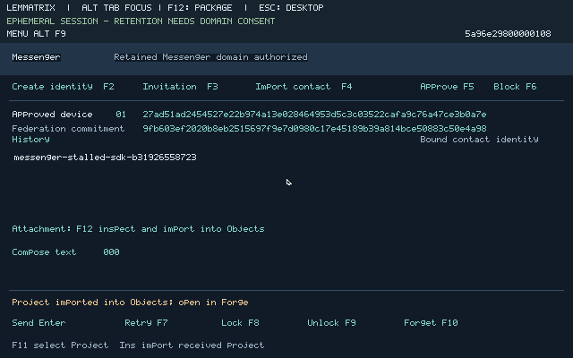
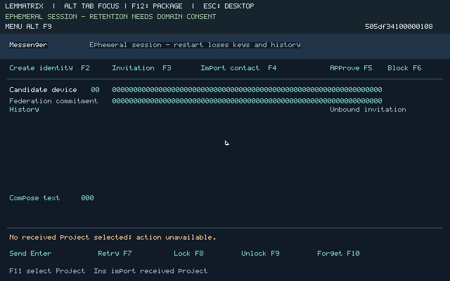

31 October 2026. This increment builds on merged e3462430f861ccce18659c1cc7145d58e5b56aa1. It supplies installable graphical Messenger, a separate rights-zero session owner, an asynchronous ciphertext coordinator, native enrolled three-hop circuits, and a durable native mailbox. The component inventory preserves each execution’s actual image, package, scope and limitations. The connected graphical offline exchange, useful project import, routed reply, existing Forge inspection, retained retry, relay failure, stalled-transfer recovery and older-backup controls passed within the stated local service bounds. The connected evidence record separates each actual execution and its package versions from the final clean rebuild; component results do not qualify an unexecuted step.
Each personal guest generates its own classical XEdDSA/X3DH credentials and ratchet keys. A separately scoped native Ed25519 contact certificate binds the independently scoped messaging device. Contact import shows the actual fingerprint and requires approval. Each relay and mailbox generates its own transport, onion and certification keys. Public enrollment commits to a complete versioned descriptor; authenticated channel possession, selected federation, explicit pins, distinct identities and declared-family selection are checked natively. Declared families do not establish independent operators or defeat Sybils.
The Network owner telescopes three ntor-v3 hops and processes ordinary Tor relay cells with independent per-direction cipher, digest and flow state. The adjacent channel is the published Noise NK pattern bound to the selected descriptor; the terminal has a separate client-to-service NK relationship. This disclosed guest-channel adaptation does not establish Tor interoperability. Mode1 is enforced by the routed API. Explicit direct bulk mode3 retains its separate contract; modes2/4 remain unavailable.
The session owner commits the exact ciphertext and next ratchet state before publication. Its coordinator receives scoped mailbox capabilities and ciphertext, while the UI has mediated Objects access and no raw network, signing or block-device rights. Receive authentication, session state and retained deduplication commit precede destructive mailbox acknowledgment. The mailbox durably publishes ciphertext and its cached native signed receipt before reporting stored acceptance. A receipt binds the selected node, original service incarnation, generation, exact request, ciphertext and admitted zero-price terms. It does not prove recipient reading or settlement.
Messenger retention is separately authorized domain2. Attaching or unlocking Objects3 does not authorize it; Wallet1 remains denied. Minimum protocol state and optional conversation history have separate consent. Normal crash recovery and older-backup history import have distinct commands. History import clears old sending chains, prekeys, counters and outboxes; fresh device/session authority is required. A whole-backing rollback without an external freshness anchor cannot be detected. Native lock/forget clears accessible state and grants; it does not erase host memory, external backups or recipient copies.
Two separate personal guests created their own native scoped credentials; four separate operator guests created and sealed their own credentials. Both users imported certified672-byte invitations and approved the actual displayed fingerprints with pointer input. Bob published his native prekeys through the authenticated three-hop mailbox path, locked Messenger and stopped his entire guest. Alice composed43 bytes of text in Messenger and obtained a native verified signed durable acceptance in18.848 seconds. Route setup was32.787 seconds for Alice and38.313 seconds for Bob in the initial QEMU portion.
Alice selected an actual useful source project through the trusted Objects picker:72,787 source bytes from Messenger.lean and MessengerSDK.lean, encoded as a73,651-byte canonical bundle in144 encrypted chunks. Native upload reached its completed state while Bob remained offline. The observed311.932 seconds covers source inspection/import, selection and upload together; it is not isolated transfer throughput. The project root is c03919af2b89b7b63eca6e9baeb2ad19e80566b6a2e45749da89890532b60a46. Each source file’s actual hash and length are retained in the execution record.
The mailbox then restarted and recovered its same sealed node and receipt identities, durable ciphertext and quotas. Relay2 restarted on the native x86-64 assembly backend with the same sealed identity and common RV64 image; the other guests used QEMU. Bob restarted, explicitly recovered domain2 through the graphical form, decrypted the text, received the protected manifest, and explicitly imported the project with the footer pointer control. Native ordered chunk authentication, expected-root comparison and canonical Objects commit passed. The trusted picker showed the same root using its existing little-endian numeric-word display. No host export of Bob’s UI-owned Objects capability was added. Bob composed a routed reply; signed durable acceptance took18.250 seconds. Alice explicitly recovered and decrypted that reply. The mixed-backend setup observations were123.314 and135.335 seconds, not a statistical latency guarantee.


From that same conversation Alice sent an actual143-byte reference to the existing signed creator publication. Bob recovered and selected F1. An observed foreground-admission starvation was fixed by freezing one caller-bound request while admitted mailbox work drains. The final native request crossed the same three relays and independent terminal authentication, then used the existing Forge federation consumer and isolated Registry to verify the original signature, exact root, selected federation, policy and current admission. Its observed metadata request took5.353 seconds after route setup. No recipient content import or execution approval occurred.

The actual earlier Bob backing was copied only after a graphical lock. Supported history import rendered eligible conversation history, denied old send/retry/prekey/export operations, and retired both old sending roots on that input copy. After lock, explicitly authorized normal recovery of that retired copy failed with storage error13. A fresh F2 device then explicitly created and recovered a new retained domain with fresh identity and no old prekey or contact authority. The current UI also closed the credential form automatically and selected imported history through real PageDown input. Independently authorized Objects, forget and no-vault restart checks retain their separately identified component evidence.
A native mailbox diagnostic first showed an unsigned durable row. After the opaque adapter acknowledged a pause of the selected output epoch, native publication advanced to a signed cached receipt while the output byte counter stayed unchanged. The retained sender was then killed, restarted and recovered through graphical F9. Manual F7 retransmitted the same272-byte ciphertext, SHA256 ccc2d42df00c4a229a4d2c26a3f7bd5cee380eed173aa572de7e0447d1858d9a, and obtained the already published acceptance. The host pause adapter processed opaque bytes; it did not make the acceptance decision or edit the native queue.
Terminating the selected native-x86 relay produced a clear graphical unavailable state after local ciphertext commit. F7 preserved the exact ciphertext and required mode1. Recovering that relay’s sealed identity and constructing a fresh approved three-hop route allowed the same request to obtain a verified stored result. Escape discarded bounded local work without claiming remote withdrawal. This run used an older inspector view before the hidden-composer guard was fixed; the main connected exchange separately exercised visible graphical composition. The final guard and pointer Send denial executed on all three native backends.
Replaying the actual cached attachment batch later returned native reconciliation reason11 after the retained receipt window had ended. F7 displayed the approved contact’s actual fingerprint and the warning below. Escape preserved the same cached ciphertext and uncertainty; a separate F7 and Enter explicitly authorized fresh admission of those bytes. The host did not override the admission flag. This is a bounded replay contract, not indefinite exactly-once delivery.

The mixed route also exposed a real incomplete-upload expiry: native diagnostics recorded6 successful512-byte appends, then expiration at3,072 of7,680 bytes while the healthy terminal was sending the next append. The old lease was measured from begin and ignored valid progress. The corrected native predicate renews the same1000-tick inactivity interval only for an authenticated positive append at the exact offset, with at most8192 renewals. Expired append/commit/idempotent begin, wrong authority, replayed offsets and malformed chunks cannot extend it. Focused compiled checks ran on all three backends; the same original transfer then completed through the mixed route with zero staging expirations. Its native handles, manifest identity and cached ciphertext remained unchanged.

| Boundary | Observed result and practical limit |
|---|---|
| New cryptography and cells | Compiled RV64 AES-128/256-CTR, SHA-1, SHA3/SHAKE, Noise NK, ntor and three-hop relay processing were compared with published vectors and independent OpenSSL/hashlib or arithmetic oracles. The published Arti ntor-v3 transcript passed. Selected common probe images ran on QEMU, native x86-64 assembly and AArch64 assembly under qemu-aarch64. These checks do not establish a verified compiler, constant-time execution or an independent cryptographic audit. |
| Flow, enrollment and adapters | A focused run carried600 DATA cells with authenticated circuit and stream SENDME; selected100-cell checks ran on both assembly backends. Compiled live policy checks exercised stale/substituted descriptors, bounded bytes/work and teardown. The observed relay BEGIN47 failure was fixed by deferring connection admission behind an immutable adapter frame and pending CLOSE; all three backends executed the regression, including stale-epoch rejection. |
| Sessions and attachments | Two native owner guests exercised X3DH/ratchet authentication, exact-ciphertext retry, deduplication, restart and an89,763-byte useful Library source attachment in176 chunks, including restart inside the16-entry retry cache. That component’s opaque adapter carried ciphertext directly; it is not evidence of routed graphical attachment acceptance. |
| Mailbox and receipt authority | Native durable receipt tests covered exact cached acceptance after finite authority exhaustion and whole operator restart with sealed credentials. Current mailbox checks completed20 operations past16 resident rows, rejected wrong fetch authority and conflicting retries, retained OPK depletion across restart, rejected same-generation replenishment/substitution and required reconciliation after finite tombstone eviction. |
| Graphical controls and separation | Real keyboard/pointer checks covered paged672-byte certified invitations, fingerprint approval, composition, trusted project selection, F8 lock, F9 authorized recovery and F10 forget. A separate no-vault guest lost its native identity on restart. Independently authorized Objects remained readable while Messenger was locked/forgotten and could not acquire Messenger-domain authority. Those component checks are identified separately from the connected conversation. |
| Existing Forge and mode3 | An existing native Forge/Registry request crossed the protected three-hop terminal and applied its existing signature, federation, root and admission checks, including a newer signed revocation. This component did not exercise the conversation control. The clean common image separately passed a4,097-byte bidirectional mode3 broker regression with FIFO reuse and revoked/wrong grants. |
| Source predicates | 107 named theorems attached to live authorization, mode, receipt, contact and commit predicates checked with only enumerated propext and Quot.sound dependencies. No sorry, admitted theorem or unlisted source axiom was accepted. The final46-file source inventory and534 sensitive functions/2,258 return edges were also inspected against the exact emitted packages. This is narrow source-policy and lowering evidence, not a proof of the complete imperative service, cryptography or compiled system. |
./lt build --clean
./lt messenger package --publisher-private tests/keys/development-rsa.pem --output build/messenger-packages
python3 tests/campaign008_policy.py --output build/campaign008-policy-evidence.json
python3 tests/platform_layout.py --help
python3 tests/messenger_product_journey.py --help
python3 tests/messenger_routed_project.py --help
python3 tests/messenger_failure_controls.py --help
python3 tests/messenger_recovery_controls.py --helpThe public reproduction input tests/fixtures/campaign008-existing-forge-closure.json is the byte-identical existing creator publication from the signed Forge journey. Its14 canonical nodes, selected root and original publisher signature are retained; only its public publisher key is included. The adjacent provenance record gives hashes and the audit scope. Historical source-to-binary evidence remains explicitly unverified. Native catalog admission and execution consent remain separate.
python3 - <<'PY'
import sys
sys.path.insert(0, 'tools')
import live_build
print(live_build.app('Guest.Registry', 'Guest.Registry.main', 'campaign008-registry-reproduction', 2))
PY
python3 tests/messenger_routed_project.py --campaign build/messenger-product-connected-v2 --output build/messenger-routed-project-fresh --registry-binary build/live/apps/campaign008-registry-reproduction.bin --public-graph tests/fixtures/campaign008-existing-forge-closure.json --publisher tests/fixtures/campaign008-existing-forge-publisher.pub --prepare-onlyPreparation contacts no actor. Remove --prepare-only only after the connected campaign has released its management and input connections. This rebuild is a reproducible current Registry candidate; the execution record identifies the exact existing Registry binary actually exercised, rather than substituting a later rebuild’s hash.
The final native source is 0972075e20c8408d659af0c35e7c97352d40bb1d. A fresh clean build, removal of the five ordinary assembly/binary/link caches, fresh package compilation and independent RSA verification reproduced every frozen v19 image, payload, package, release and assembly identity. The final clean build took85.262 seconds on this host. The v17-to-v18 change corrected one secondary attachment hint from F12 to Ins. The final v19 source change corrects notice45 rendering: an unselected received project now has a visible unavailable label, and other views use their generic unavailable label. Input, authorization, protocol and transfer-state source are unchanged. The compiler emitted12 changed function bodies, so all102 sensitive UI functions were re-inspected and the current compiled transition fixture ran on all three backends. Actual earlier connected package versions remain separately identified. The public local bundle build/campaign008-native-messenger.tar.gz is787,529 bytes, SHA256 17fff4721526314f56b4e461a3e7178ebcb556bbe7f0b32fe6e14748ec72d95e. Its eight explicitly selected public members contain the common image, five signed packages, public publisher pin and manifest; no backing or operational secret is included.
The clean common6-MiB image is 04c1062f9835e692d6916b6b73576ab975b0db4104489eb83ff535b25d9f7a2b. The command guide gives complete per-node build, package, start, enroll, selection and recovery commands. The checked-in RSA publisher key and host federation-signing fixtures are disclosed bootstrap authorities. Operational messaging, relay, mailbox and receipt private keys are created and used inside their native owners. The recovery drivers use explicitly disclosed deterministic test unlock credentials; these do not establish secrecy against the test operator. Operational private keys still originate inside each native owner. The host supplies compilation, package signing and opaque entropy, byte, block, input and display adapters; it does not implement Messenger or edit its durable databases.
Five ordinary process slots,32 exact grants, four registry roles, four transport channels and2-MiB private arenas remain bounded. Ordinary packages retain a256-KiB code ceiling. Network’s built-in code profile is explicitly384 KiB within its existing512-KiB physical slot. Ed25519 scratch moved to 0x6b0000, separate from Transport at 0x640000. Personal operation uses three ordinary slots; an existing local Registry uses a fourth. The operator storage extent is separate from personal Messenger/Objects backing. Work-quanta admission and bounded retention are not civil-time expiry.
The five signed ordinary packages contain893,900 bytes of executable code in the final packages. The UI is254,852 bytes, with7,292 bytes below the unchanged256-KiB ceiling. The observed inspector-exit and hidden-composer issues were fixed and checked by executing the compiled key handler on all three backends. Completion dispatch now uses its admitted action and contact; a rejected gesture cannot overwrite an in-flight transfer tag. Text can preempt an idempotent attachment fetch poll, while cryptographic staging and commit operations remain serialized. A locally published attachment restores as an uncertain exact-batch retry; that counter is not a persisted remote receipt. A separate native warning requires explicit confirmation for missing-receipt reconciliation and explains possible duplicate delivery. The actual confirmed retry exposed a second scheduling bypass in the failed-batch branch; the same finite hint now covers both first admission and failed exact retry, with expiration and current-grant revalidation. Each personal configuration used all32 exact grants and three ordinary application slots, with a fourth slot for its actual Registry verifier. The complete project used144 authenticated512-byte chunks and bounded fourteen-chunk mailbox blobs, rather than a resident whole-project plaintext allocation. These are observed counts and configured bounds; no peak-memory or statistical throughput claim is inferred.
The mailbox Network owner currently has one serialized protected client context. The connected journey uses explicit native operator stop/listen handoff between personal clients. Concurrent mailbox terminal clients and automatic handoff remain unavailable; this implementation does not qualify them. The stalled-transfer check measures the active client’s local text admission, UI and cancellation under a paused response path, then verified storage after resumption; it does not establish simultaneous independent client delivery. A background result can replace the general footer while a contact-bound reconciliation dialog remains visible. The actual modal, transfer reason and fingerprint govern consent; the footer alone is not a new transfer authority.

The final installed-control check passed on QEMU; the previous v18 package also passed on native x86-64. The emulated AArch64 installed check timed out in the120-second host wait for command22 session-owner package inspection, before the owner or UI started. The isolated process group was stopped. Full installed Messenger on that backend remains unqualified; this failure is retained alongside the separately passed compiled AArch64 cryptographic, mailbox and UI transition checks. No global deadline was increased.
The connected records qualify the offline graphical deposit, useful streamed project transfer, actual mailbox and personal restart, authorized recipient recovery/decryption/import/reply, conversation-selected existing Forge control and supported older-backup history recovery. The acceptance-boundary crash and broken-relay checks also passed. The final stalled-transfer execution also passed. The recipient’s9,142-byte two-blob project stayed at zero received chunks while the opaque mailbox output epoch was paused. Actual graphical composition took2.682 seconds; one Enter admitted a new native outbox message, and Escape returned local cancellation in0.269 seconds. After output resumed, that text obtained verified signed storage. The first immediate attachment F7 was busy while the text send remained active. One later quiescent F7 authenticated all18 chunks and committed the same canonical project into Objects in35.399 seconds. No new sender transfer, manifest or key was created. The component inventory preserves original identities even when later source changes supersede a fixture; a later rebuild does not retroactively replace an earlier execution’s binaries.
All local nodes are controlled by one test operator on one host. Physical ARM hardware, independent human operators, physical vault power loss, an external rollback freshness anchor and independent security review remain validation gaps. Classical messaging is not post-quantum. AES currently uses secret-indexed tables; compiler frame cleanup is an inspected lowering policy, not a timing proof. A local three-relay run does not establish Tor interoperability, global traffic-correlation resistance or hostile-government resilience.
MSG-001, RG-07 and the public MVP remain incomplete. Limited project groups, Feed federation, Wallet/LemmaCoin, modes2/4, broader REL/self-hosting and independent deployment gates remain obligations under the unchanged governing requirements.